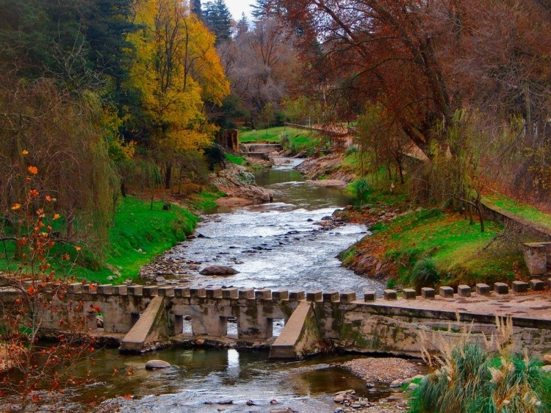
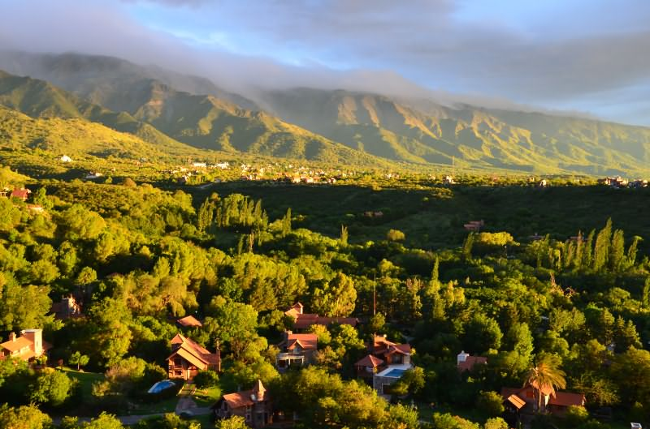
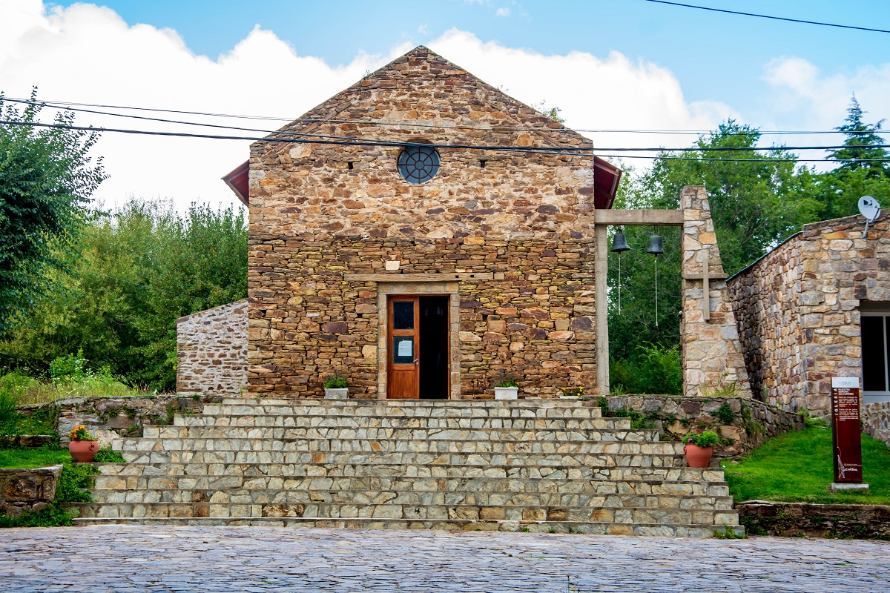

TRAPICHE
El Trapiche es una de las principales localidades turísticas de la provincia de San Luis, Argentina, ubicada a 39 km al norte de la capital provincial. El Trapiche y su zona de influencia se caracteriza por la vegetación, los ríos y arroyos, y la conservación del medioambiente natural.

POTRERO DE LOS FUNES
Potrero de los Funes goza casi todo el año de un clima ameno muy favorable al turismo, especialmente con el atractivo del lago del Embalse Potrero de los Funes, el cual además de ofrecer hermosos paisajes permite la práctica de deportes náuticos y la pesca deportiva. En los meses de verano Potrero de los Funes es el centro del festival de Folclore llamado El Fogón y el Lago, con artistas locales, provinciales y nacionales; siendo este uno de los más reconocidos de la provincia de San Luis.
Con diversos hoteles y cámpines alrededor del Embalse Potrero de los Funes, es uno de los sitios más turísticos de la zona adyacente al Gran San Luis.

MERLO
Villa de Merlo es una ciudad de la provincia de San Luis, en la zona central de Argentina. Se ubica a los pies de las montañas Comechingones. En el centro de la ciudad se encuentra la Iglesia de Nuestra Señora del Rosario, construida en el siglo XVIII con adobe. El Museo del Poeta Antonio Esteban Agüero está ubicado en la antigua casa del poeta y documenta su vida y su obra. Un camino al este de la ciudad sube al Mirador del Sol, con vistas panorámicas de las montañas.

LA CAROLINA
La Carolina es una localidad del departamento Coronel Pringles en la provincia de San Luis, Argentina. Se encuentra enclavada en las sierras de San Luis, al pie del cerro Tomolosta, de 2018 m s. n. m., a 83 km al norte de la ciudad de San Luis, por Ruta Provincial 9.

SIERRA DE LAS QUIJADAS
El parque nacional Sierra de las Quijadas se encuentra ubicado en el noroeste de la provincia de San Luis, en el centro-oeste de Argentina, en los departamentos Belgrano y Ayacucho, y abarca una superficie de 73 534 ha. La reserva nacional prevista en la ley no ha sido establecida.